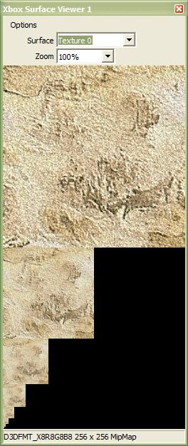
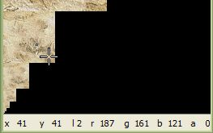

The Xbox Surface Viewer is a Visual Studio .NET plug-in that allows you to examine surfaces in your game title while debugging the title. The following image shows Xbox Surface Viewer in action:

As you can with any other tool window in Visual Studio .NET, you can do the following with Xbox Surface Viewer: 1) reposition the Xbox Surface Viewer by dragging its title bar, 2) resize the tool by dragging the window's lower-right corner, or 3) dock the tool by dragging its title bar to the edge of the screen where you wish to dock it, or by double-clicking the tool window's title bar.
To start the Xbox Surface Viewer, on the Tools menu, click Xbox Surface Viewer. The tool is available only while debugging a project, not during design time. Also, the viewer will not display anything while the project is running; the project must be halted at a breakpoint.
Note The Xbox Surface Viewer only works with a Xbox console that has been recovered with the November XDK or later.
Xbox Surface Viewer allows you to view a number of different surfaces. To select a surface, choose the desired surface from the Surface combo box. The following table describes the options in the Surface combo box:
| Option | Description |
|---|---|
| Render Target | Displays the current D3D render target. Typically, this will be the back buffer. A title can change the render target by calling IDirect3DDevice::SetRenderTarget. |
| Depth/Stencil | Displays the depth or stencil buffer, depending on the setting of the Display Depth option located on the Xbox Surface Viewer's Options menu. If Display Depth as Grayscale or Display Depth as RGB are selected, the Depth/Stencil option displays the depth buffer. If Display Stencil is selected, Depth/Stencil displays the stencil buffer portion of the depth buffer. |
| Texture 0 | Displays the contents of the Xbox console's hardware texture 0. |
| Texture 1 | Displays the contents of the Xbox console's hardware texture 1. |
| Texture 2 | Displays the contents of the Xbox console's hardware texture 2. |
| Texture 3 | Displays the contents of the Xbox console's hardware texture 3. |
| Back Buffer | Displays the back buffer. |
| Front Buffer | Displays the front buffer. |
| Third Buffer | For titles that use triple buffering, displays the third buffer. |
| Overlay | Displays the overlay surface, a Direct3D feature sometimes used to display compressed video. |
The Zoom drop-down list controls how large the surface appears in the Xbox Surface Viewer window. You can choose from the following options:
| Option | Description |
|---|---|
| Fit | Fits the surface image to the current size of the viewer window. Note that for this and the other two Fit options, the image is never enlarged to fit the window, only shrunk if it is too large to fit. Use the percentage options to display a surface at larger than its actual resolution. |
| Fit H | Fits the surface image to the width of the viewer window. |
| Fit V | Fits the surface image to the height of the viewer window. |
| 12.5 percent | Sizes the surface image to 12.5 percent of its actual size. |
| 25 percent | Sizes the surface image to 25 percent of its actual size. |
| 50 percent | Sizes the surface image to 50 percent of its actual size. |
| 100 percent | Sizes the surface image to 100 percent of its actual size. |
| 200 percent | Sizes the surface image to 200 percent of its actual size. |
| 400 percent | Sizes the surface image to 400 percent of its actual size. |
| 800 percent | Sizes the surface image to 800 percent of its actual size. |
In addition to the Surface and Zoom controls, Xbox Surface Viewer has an Options menu. This menu provides the following options:
| Option | Description |
|---|---|
| Copy | Copies the currently displayed image to the clipboard. |
| Set as Desktop Background | Sets the currently displayed image as your desktop wallpaper. |
| Save Image As... | Saves the currently displayed image in one of the following formats: BMP, GIF, JPG, PNG, or raw Xbox surface data (.raw). |
| Safe Area | Draws a line around the safe area
for different TV types. You can choose one of the following options:
|
| Display Alpha | Changes how alpha channel data is
displayed. You can choose from the following options:
|
| Display Depth | Changes how information is
displayed when the Depth/Stencil surface is selected. You may choose from
the following mutually-exclusive options:
|
| Display Channels | Restricts view to a specific
channel. You may choose from the following options:
|
| Apply Xbox Gamma Ramp | Toggles application of the Xbox gamma ramp to the displayed image. The Xbox Gamma Ramp is linear by default, so this option will not have any visible effect unless the title has called IDirect3DDevice8::SetGammaRamp. |
| Auto Levels | When selected, this option spreads the brightness values of the currently displayed image across the spectrum from black to white. This option can help diagnose lighting problems where a rendered frame appears to be entirely black, but contains an image that is too dark to see normally. When viewing a depth buffer where all the objects in the buffer have similar Z values, the Auto Levels option can also provide a little more contrast. |
| Adjust for PC Display | When selected, this option brightens the image a little to better simulate its appearance on a TV. |
| Status Line | Controls display of pixel
information in the status bar. You can choose from the following options:
|
The Xbox Surface Viewer status bar provides information about the pixel located under the mouse cursor. Hovering the mouse cursor over the surface image changes the cursor to a crosshairs, and the status bar displays information about both the coordinates and components of the pixel that is currently located under the mouse cursor. The following image shows the crosshair cursor and status bar for a mipmap:

The left side of the status bar displays coordinate information about the pixel under the cursor, and the right side of the status bar displays information about the components that make up that pixel.
For a particular pixel, the status bar displays two or three spatial coordinates, plus a mipmap level or a cube face for mipmap or cubemap textures. The following table outlines the abbreviations used to describe coordinate information in the status bar:
| Abbreviation | Description |
|---|---|
| x, y, z | Spatial coordinates. These coordinates start at zero and increase to the bounds of the surface. |
| u, v, t | Texture coordinates. For linear textures, these values are the same as x, y, and z. For swizzled textures, these values range from 0.0 to 1.0. |
| l | Mipmap level. The largest level is 0. |
| f | Cubemap face |
Depending on the surface format, a pixel may have from one to four components. Components may be displayed in either decimal or hexadecimal format. The following table outlines the abbreviations used to describe component information in the status bar:
| Abbreviation | Description |
|---|---|
| r, g, b | Red, green, and blue color components |
| a | Alpha |
| y, u, v | Luminance and u, v parameters. The u and v components range from -128 to 127. |
| d | Decimal depth format |
| f | Floating point depth format |
| s | Stencil data |
| p | Paletted texture |
| l | Luminance |
Each time you select the Xbox Surface Viewer menu item, another Xbox Surface Viewer window appears, allowing you to display different surfaces simultaneously. You may open up to eight individual windows.
To view an arbitrary surface from the title you are currently debugging, enter its address into the Surface combo box.
Note You must enter a memory address into the Surface combo box, not a variable name or an arbitrary expression.
You may also drag-and-drop a surface pointer from the Watch, Auto, or Locals windows to the Xbox Surface Viewer window. Alternatively, you may enter an expression that evaluates to a surface pointer into a Watch window, then drag-and-drop the expression to the Xbox Surface Viewer.If you are using the Xbox Surface Viewer, and your surfaces seem to be pure white or pure black, check to make sure that you haven't accidentally selected the Display Stencil option or the Show Alpha Channel option. These options can produce unexpected results.
The Xbox raw-surface file format consists of a 16-byte header, followed by the raw surface data as it exists in memory on the Xbox console. The 16-byte header has the following structure:
struct RawHeader
{
char sig[4];
DWORD dwFormat;
DWORD dwSize;
DWORD dwFlags;
};
RawHeader header;
header.sig[0] = 'X';
header.sig[1] = 'R';
header.sig[2] = 'A';
header.sig[3] = 'W';
The dwFormat and dwSize fields have the same format as the corresponding D3DSurface fields. The dwFlags field is currently unused, and should be ignored.
The rest of the file is raw Xbox-specific image data. The only processing performed on the data is:
Swizzled image formats are kept swizzled. You can use XGUnswizzleRect or XGUnswizzleBox to unswizzle the swizzled data.